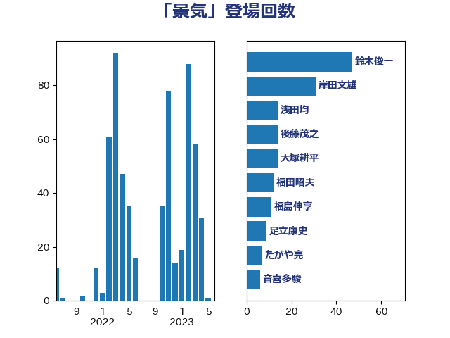

単語「景気」

| 鈴木俊一 | 自由民主党 | 47 回 |
| 岸田文雄 | 自由民主党 | 31 回 |
| 浅田均 | 日本維新の会 | 14 回 |
| 後藤茂之 | 自由民主党 | 14 回 |
| 大塚耕平 | 国民民主党 | 14 回 |
| 福田昭夫 | 立憲民主党 | 12 回 |
| 福島伸享 | 無所属 | 11 回 |
| 足立康史 | 日本維新の会 | 9 回 |
| たがや亮 | れいわ新選組 | 7 回 |
| 音喜多駿 | 日本維新の会 | 6 回 |
| 階猛 | 立憲民主党 | 6 回 |
| 萩生田光一 | 自由民主党 | 6 回 |
| 鈴木義弘 | 国民民主党 | 5 回 |
| 赤木正幸 | 日本維新の会 | 5 回 |
| 西岡秀子 | 国民民主党 | 5 回 |
| 落合貴之 | 立憲民主党 | 5 回 |
| 舞立昇治 | 自由民主党 | 5 回 |
| 神谷宗幣 | 参政党 | 5 回 |
| 礒崎哲史 | 国民民主党 | 5 回 |
| 末松義規 | 立憲民主党 | 5 回 |
| 山際大志郎 | 自由民主党 | 5 回 |
| 伊藤孝恵 | 国民民主党 | 5 回 |
| 馬淵澄夫 | 立憲民主党 | 4 回 |
| 青柳仁士 | 日本維新の会 | 4 回 |
| 石井苗子 | 日本維新の会 | 4 回 |
| 玉木雄一郎 | 国民民主党 | 4 回 |
| 浅野哲 | 国民民主党 | 4 回 |
| 沢田良 | 日本維新の会 | 4 回 |
| 岬麻紀 | 日本維新の会 | 4 回 |
| 山本太郎 | れいわ新選組 | 4 回 |
| 大石あきこ | れいわ新選組 | 4 回 |
| 中川正春 | 立憲民主党 | 4 回 |
| 上田清司 | 国民民主党 | 4 回 |
| 黄川田仁志 | 自由民主党 | 3 回 |
| 金子俊平 | 自由民主党 | 3 回 |
| 野田佳彦 | 立憲民主党 | 3 回 |
| 藤巻健太 | 日本維新の会 | 3 回 |
| 稲富修二 | 立憲民主党 | 3 回 |
| 福山哲郎 | 立憲民主党 | 3 回 |
| 浜田聡 | NHK党 | 3 回 |
| 櫻井周 | 立憲民主党 | 3 回 |
| 梅村聡 | 日本維新の会 | 3 回 |
| 杉尾秀哉 | 立憲民主党 | 3 回 |
| 斉藤鉄夫 | 公明党 | 3 回 |
| 岸真紀子 | 立憲民主党 | 3 回 |
| 山添拓 | 日本共産党 | 3 回 |
| 堂込麻紀子 | 無所属 | 3 回 |
| 吉田久美子 | 公明党 | 3 回 |
| 加藤勝信 | 自由民主党 | 3 回 |
| 世耕弘成 | 自由民主党 | 3 回 |
| ながえ孝子 | 無所属 | 3 回 |
| 阿部司 | 日本維新の会 | 2 回 |
| 西田昌司 | 自由民主党 | 2 回 |
| 西村康稔 | 自由民主党 | 2 回 |
| 藤丸敏 | 自由民主党 | 2 回 |
| 菅義偉 | 自由民主党 | 2 回 |
| 芳賀道也 | 国民民主党 | 2 回 |
| 田村まみ | 国民民主党 | 2 回 |
| 牧山ひろえ | 立憲民主党 | 2 回 |
| 湯原俊二 | 立憲民主党 | 2 回 |
| 清水貴之 | 日本維新の会 | 2 回 |
| 櫛渕万里 | れいわ新選組 | 2 回 |
| 横沢高徳 | 立憲民主党 | 2 回 |
| 森本真治 | 立憲民主党 | 2 回 |
| 柴田巧 | 日本維新の会 | 2 回 |
| 柳ヶ瀬裕文 | 日本維新の会 | 2 回 |
| 枝野幸男 | 立憲民主党 | 2 回 |
| 東徹 | 日本維新の会 | 2 回 |
| 新垣邦男 | 立憲民主党 | 2 回 |
| 斎藤アレックス | 国民民主党 | 2 回 |
| 岡本三成 | 公明党 | 2 回 |
| 山本博司 | 公明党 | 2 回 |
| 小宮山泰子 | 立憲民主党 | 2 回 |
| 奥野総一郎 | 立憲民主党 | 2 回 |
| 太田房江 | 自由民主党 | 2 回 |
| 大西健介 | 立憲民主党 | 2 回 |
| 大島九州男 | れいわ新選組 | 2 回 |
| 大串博志 | 立憲民主党 | 2 回 |
| 北神圭朗 | 無所属 | 2 回 |
| 前原誠司 | 国民民主党 | 2 回 |
| 住吉寛紀 | 日本維新の会 | 2 回 |
| 伊佐進一 | 公明党 | 2 回 |
| 井原巧 | 自由民主党 | 2 回 |
| 井上貴博 | 自由民主党 | 2 回 |
| 中川宏昌 | 公明党 | 2 回 |
| 上川陽子 | 自由民主党 | 2 回 |
| 高橋英明 | 日本維新の会 | 1 回 |
| 高橋光男 | 公明党 | 1 回 |
| 高村正大 | 自由民主党 | 1 回 |
| 馬場伸幸 | 日本維新の会 | 1 回 |
| 青木愛 | 立憲民主党 | 1 回 |
| 野間健 | 立憲民主党 | 1 回 |
| 野田聖子 | 自由民主党 | 1 回 |
| 辻元清美 | 立憲民主党 | 1 回 |
| 輿水恵一 | 公明党 | 1 回 |
| 谷合正明 | 公明党 | 1 回 |
| 西田実仁 | 公明党 | 1 回 |
| 蓮舫 | 立憲民主党 | 1 回 |
| 舟山康江 | 国民民主党 | 1 回 |
| 緑川貴士 | 立憲民主党 | 1 回 |
| 笠井亮 | 日本共産党 | 1 回 |
| 窪田哲也 | 公明党 | 1 回 |
| 稲津久 | 公明党 | 1 回 |
| 福重隆浩 | 公明党 | 1 回 |
| 福田達夫 | 自由民主党 | 1 回 |
| 神田潤一 | 自由民主党 | 1 回 |
| 石川香織 | 立憲民主党 | 1 回 |
| 石井章 | 日本維新の会 | 1 回 |
| 石井拓 | 自由民主党 | 1 回 |
| 石井啓一 | 公明党 | 1 回 |
| 田村智子 | 日本共産党 | 1 回 |
| 田嶋要 | 立憲民主党 | 1 回 |
| 片山大介 | 日本維新の会 | 1 回 |
| 片山さつき | 自由民主党 | 1 回 |
| 横山信一 | 公明党 | 1 回 |
| 森屋宏 | 自由民主党 | 1 回 |
| 梅村みずほ | 日本維新の会 | 1 回 |
| 松野博一 | 自由民主党 | 1 回 |
| 杉久武 | 公明党 | 1 回 |
| 末次精一 | 立憲民主党 | 1 回 |
| 末松信介 | 自由民主党 | 1 回 |
| 打越さく良 | 立憲民主党 | 1 回 |
| 庄子賢一 | 公明党 | 1 回 |
| 川合孝典 | 国民民主党 | 1 回 |
| 小野泰輔 | 日本維新の会 | 1 回 |
| 小田原潔 | 自由民主党 | 1 回 |
| 小沢雅仁 | 立憲民主党 | 1 回 |
| 小池晃 | 日本共産党 | 1 回 |
| 宮本徹 | 日本共産党 | 1 回 |
| 宗清皇一 | 自由民主党 | 1 回 |
| 守島正 | 日本維新の会 | 1 回 |
| 大家敏志 | 自由民主党 | 1 回 |
| 堀場幸子 | 日本維新の会 | 1 回 |
| 堀井学 | 自由民主党 | 1 回 |
| 国定勇人 | 自由民主党 | 1 回 |
| 吉田とも代 | 日本維新の会 | 1 回 |
| 古賀篤 | 自由民主党 | 1 回 |
| 古川禎久 | 自由民主党 | 1 回 |
| 古川俊治 | 自由民主党 | 1 回 |
| 勝部賢志 | 立憲民主党 | 1 回 |
| 倉林明子 | 日本共産党 | 1 回 |
| 伊藤達也 | 自由民主党 | 1 回 |
| 伊藤渉 | 公明党 | 1 回 |
| 仁木博文 | 無所属 | 1 回 |
| 中西健治 | 自由民主党 | 1 回 |
| 中条きよし | 日本維新の会 | 1 回 |
| 中山展宏 | 自由民主党 | 1 回 |
| 下野六太 | 公明党 | 1 回 |
| 上田英俊 | 自由民主党 | 1 回 |
| 上田勇 | 公明党 | 1 回 |
| 一谷勇一郎 | 日本維新の会 | 1 回 |
| こやり隆史 | 自由民主党 | 1 回 |
| おおつき紅葉 | 立憲民主党 | 1 回 |